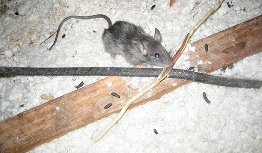

False Alarm
Never mind, it seems like the only thing this place is haunted by is spiders, cobwebs, and...RATS! That scratching was just a cute little fella. Case closed, people. This house is NOT haunted!


Never mind, it seems like the only thing this place is haunted by is spiders, cobwebs, and...RATS! That scratching was just a cute little fella. Case closed, people. This house is NOT haunted!
